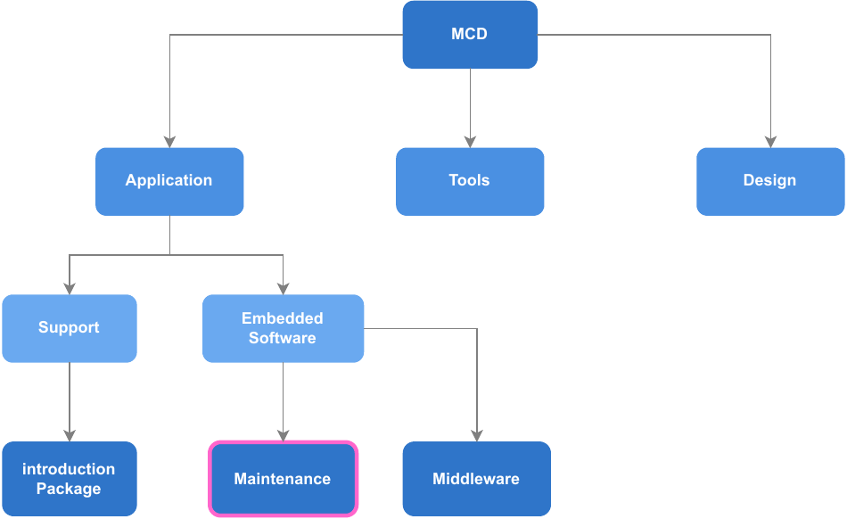
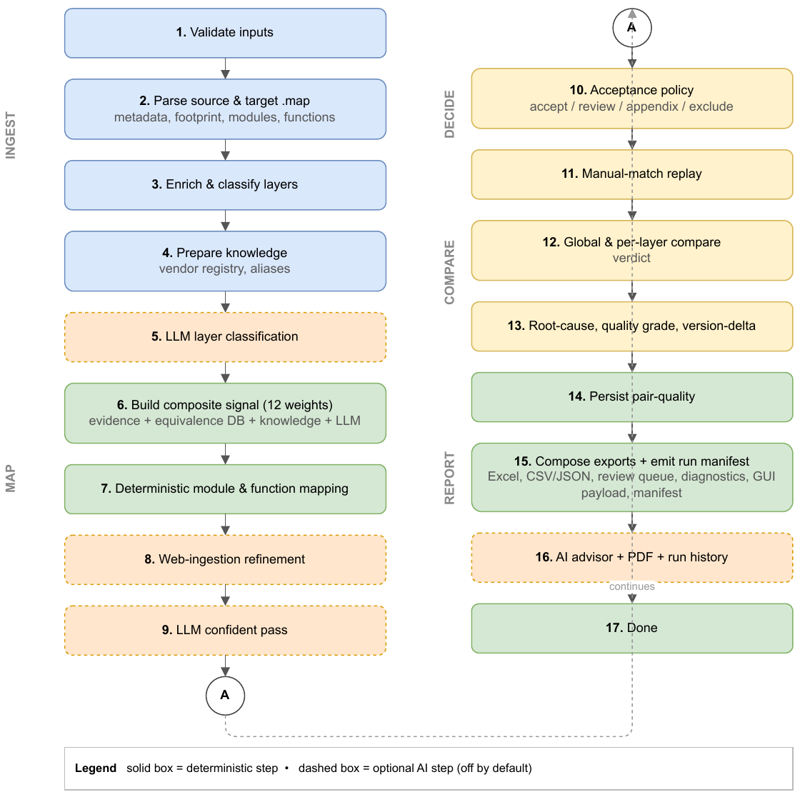
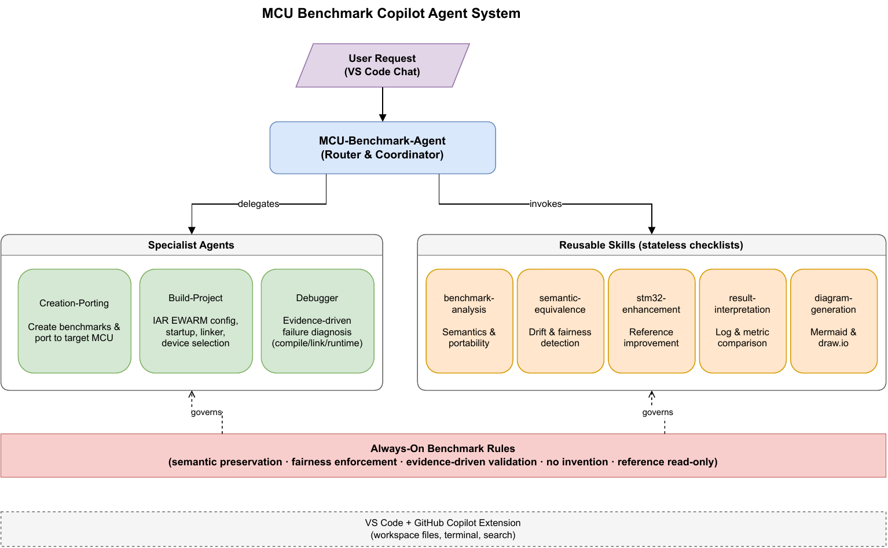
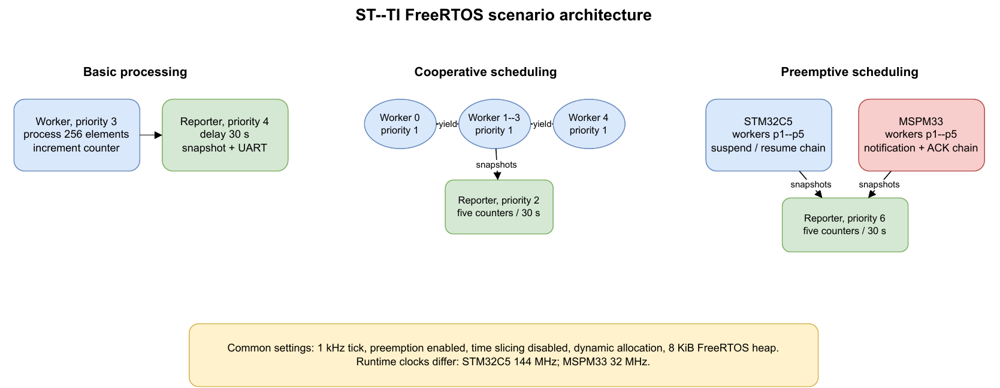

End-of-studies project - STMicroelectronics Tunis
STM32Cube
Ecosystem Benchmark
From isolated cross-vendor measurements to a repeatable benchmark engineering workflow.
Problem -> method -> pilot -> tools -> GD32/TI results -> perspectives
01 - Industrial context
Why ecosystem evidence matters
The selection problem
- An MCU choice depends on more than CPU frequency and memory capacity.
- Drivers, middleware, project templates, build tools, and documentation affect engineering cost.
- Cross-vendor claims need scenario-level measurements that can be reviewed and reproduced.

02 - Problem statement
The starting point was fragmented
Manual comparison
Linker maps, workbooks, build projects, and captures were reconciled by hand.
Different ecosystems
Equivalent behavior is split across different APIs, files, software layers, and project structures.
Evidence risk
A result can become misleading when clocks, boundaries, versions, or scenario semantics differ.
03 - Project chronology
Five contributions, one coherent progression
Board search
Standalone host assignment: nearest STM32 candidates.
USB pilot
ST, Renesas, and NXP; first evidence controls.
Workflow Studio
Automated linker-map classification and comparison.
Copilot Agent
Assisted project creation, build, debug, and provenance.
Extended studies
USB/FreeRTOS with GD32; driver and FreeRTOS analysis with TI.
Important distinction: the board-equivalence search was independent and did not select the boards used in later campaigns.
04 - Benchmark method
Measure only after defining fairness
Core metrics
Evidence hierarchy
Reviewed presentation images were used when they conflicted with workbook cells; the conflict and decision remain documented.
05 - First experimental phase
The USB pilot established the controls
STM32 baseline -> optimized
ROM changed little in CDC and MSC; the strongest optimization effect was RAM and initialization time.
What the pilot taught us
- Renesas: optimized STM32 had lower summary ROM, RAM, and initialization values in all three recorded rows.
- NXP: average STM32 ROM gap was +26.22% with RCC and +4.16% without RCC.
- The measurement boundary can change the ordering; it must be visible.
06 - Engineering response
Two tools address two different bottlenecks
MCU Benchmark Copilot Agent
Before the linker map exists
- Resolve and acquire scenarios
- Create or port projects
- Build and diagnose failures
- Track provenance and fairness
MCU Workflow Studio
After comparable builds exist
- Parse linker maps
- Classify architectural layers
- Map equivalent symbols
- Export explainable comparisons
07 - Contribution A
MCU Workflow Studio
Design choices
- Two IAR map files are the only required inputs.
- Symbols are classified by software layer.
- Candidate matches carry confidence and signal diagnostics.
- SQLite retains vendor knowledge and confirmed mappings.
- XLSX, CSV, JSON, and optional PDF outputs support review.

08 - Contribution B
MCU Benchmark Copilot Agent

Safety boundary: workspace operations can be automated, but physical hardware programming requires approval.
09 - Extended campaign
STM32U575 vs GD32E507
Recorded whole-image pattern
Interpretation
- STM32 assigned more ROM to HAL; GD32 USB images assigned more to middleware.
- The middleware totals themselves were comparatively close.
- No repeated samples or dispersion were available for the timing claim.
- RCC is a priority for map inspection and controlled rebuilds, not a proven universal root cause.
10 - Extended campaign
STM32C5 vs TI MSPM33
Driver source study
Lines, documentation, duplication, complexity, API structure, MISRA-addon findings, and SDK inventory.
Functional portfolio
Twelve independently linked pairs across ADC, GPIO, I2C, SPI, and UART behavior.
FreeRTOS portfolio
Basic, cooperative, and preemptive scenarios with runtime and whole-image footprint.
Key fairness limit: STM32 ran at 144 MHz and MSPM33 at 32 MHz; kernel versions and preemptive synchronization semantics also differed.
11 - TI source analysis
Different strengths in selected SDK releases
STM32CubeC5 observations
| Code lines | 22,292 vs 27,972 |
| Documentation | 97.3% vs 82.6% |
| Duplication | 2.19% vs 7.25% |
| Avg. complexity | 4.44 vs 7.35 |
Broader selected-release inventory in several connectivity and security categories.
MSPM33 observations
- Wider use of enums and typedefs.
- Distinct analog integration in the selected device.
- Selected SDK inventory includes AI, graphics, automotive, and post-quantum components.
- These are structural, inventory, and datasheet observations, not measured application advantages.
12 - TI linked images and FreeRTOS
Footprint is conclusive; runtime remains bounded
MSPM33 retained a small 56-76 byte RAM advantage in the FreeRTOS images.

13 - Synthesis
What the project actually establishes
Technical evidence
Footprint and source-structure differences are scenario- and release-dependent.
Methodological evidence
Boundary definition, provenance, and semantic checks are as important as the final number.
Engineering contribution
The two tools convert recurring campaign work into a reusable, reviewable process.
14 - Perspectives
How to turn observations into stronger conclusions
Experimental controls
- Equal clocks and one documented software configuration.
- Common primitives and measurement boundaries.
- Warm-up policy, repeated samples, and dispersion.
- Archived maps, captures, configurations, and hashes.
Tool validation and scale
- Validate Workflow Studio on a larger labeled map collection.
- Record agent campaigns and distinguish automation from manual intervention.
- Extend to new middleware and vendors only with the same evidence controls.
- Investigate retained RCC and USB paths through map inspection and controlled rebuilds.
Conclusion
We did not build a single scoreboard.
We built a way to produce credible benchmark evidence repeatedly.